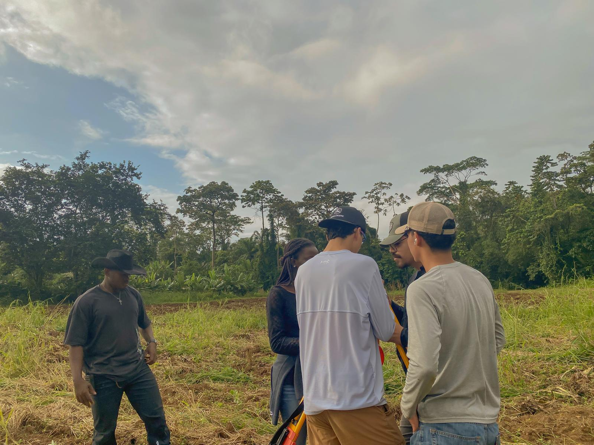
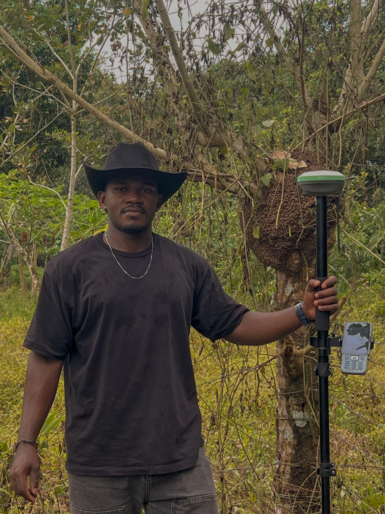
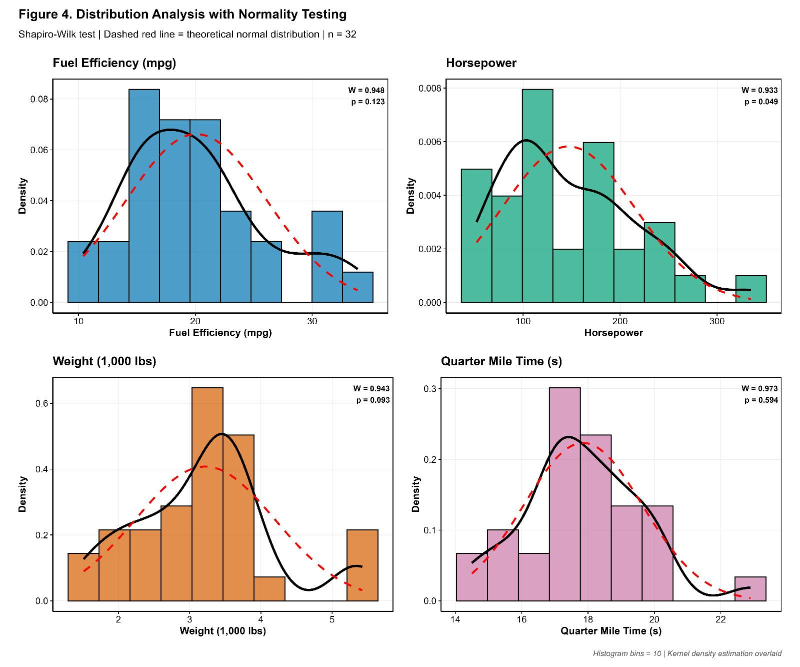
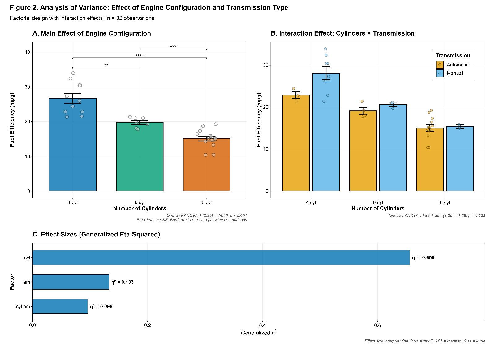
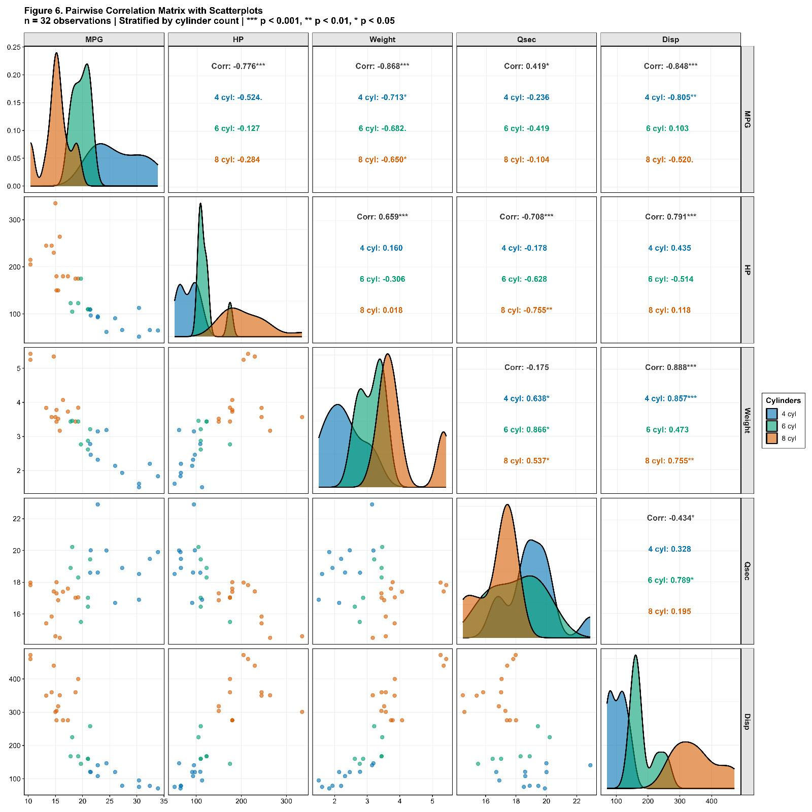
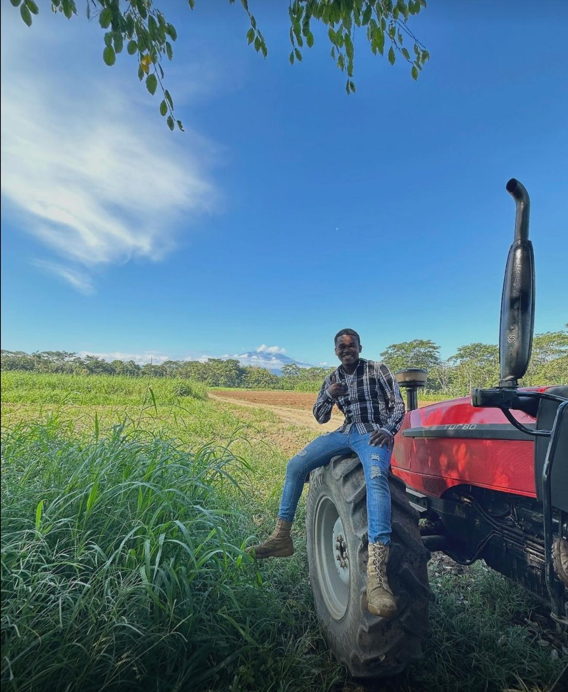
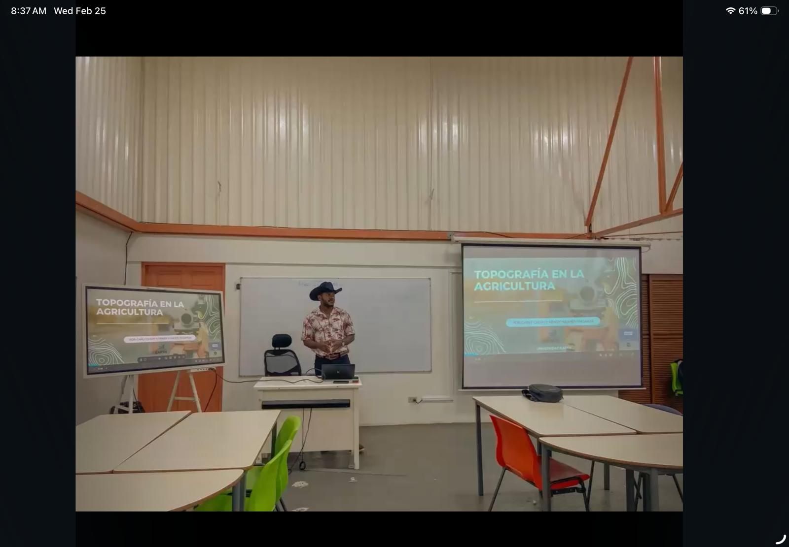
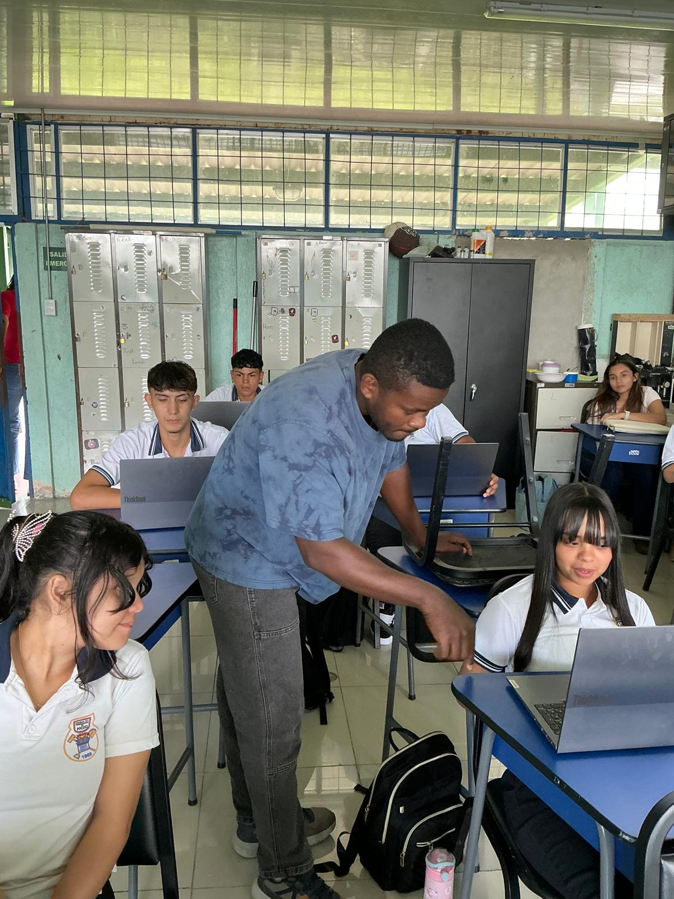
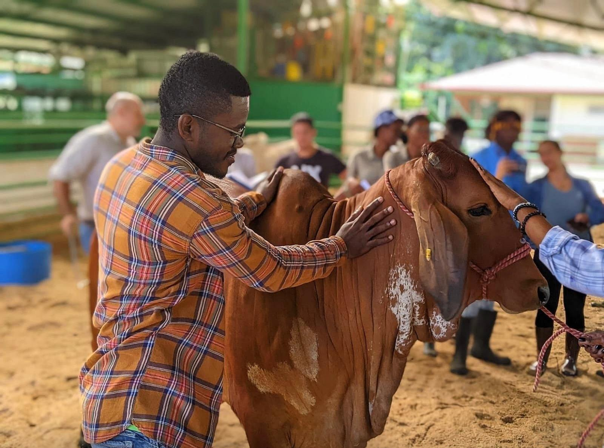

Using mapping, spatial analysis, and smart technologies to improve farming decisions and productivity across Latin America.
My name is Carly Chery, and I am passionate about transforming agriculture through technology. With a background in Agricultural Engineering and growing expertise in GIS and precision agriculture, I bridge the gap between traditional farming and modern digital solutions.
I work with field data, crop management, and spatial analysis using QGIS. My goal is to develop innovative systems that help farmers increase productivity while maintaining sustainability — particularly smart crop management platforms for cassava production.
Empower farmers with data-driven tools and sustainable agricultural solutions.
Become a leader in AgriTech innovation in Latin America.

A smart system integrating agronomic data, weather information, and market prices to provide recommendations on fertilizers, pest control, and profitability. Built to scale cassava production across Latin America through data and automation.

Spatial map of a farm including soil zones and crop distribution to support better decision-making and land use planning.

Analyzed crop performance based on environmental and soil data to generate targeted agronomic recommendations.
Professional AI coding assistant embedded in RStudio, powered by Claude Sonnet. Features 1,730+ expert prompts, real-time streaming, and a dedicated Agricultural Analytics module with Random Forest models for soil fertility, crop disease, and yield optimization.
View on GitHub →





Feel free to reach out for collaborations, consulting opportunities, or to discuss innovative agricultural solutions.
Thanks for reaching out. I'll get back to you as soon as possible.
Please try again or email me directly at cchery@earth.ac.cr.